People aren't the means.
People are the point.
A little world that sends you back to yours.
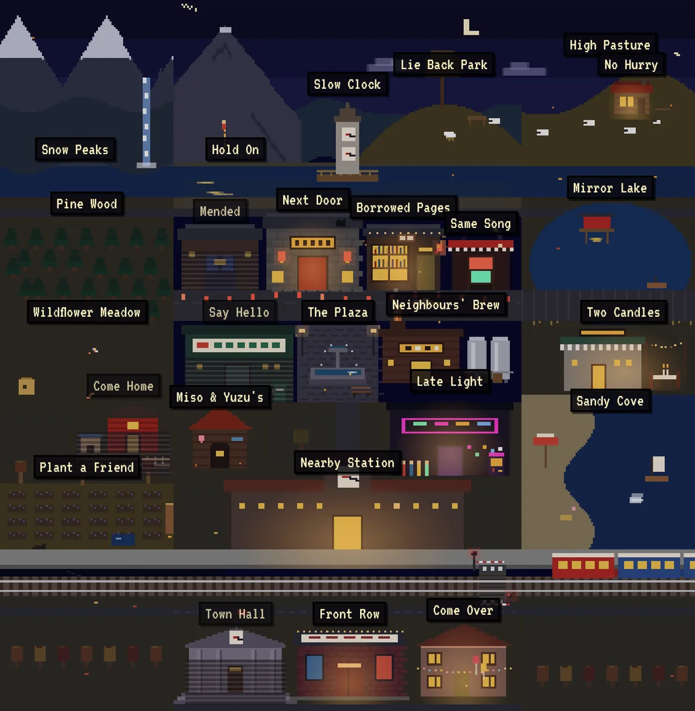
House rules
06Every place works alone or with a friend far away. One link.
Leaving a place ends with something to do off the screen.
Warm grass on the hill. Nothing to win.
No streaks, no badges, no leaderboards.
Wei, his cousin Mei, his grandmother Popo or the cats. They point you somewhere, then let you go.
Look around
14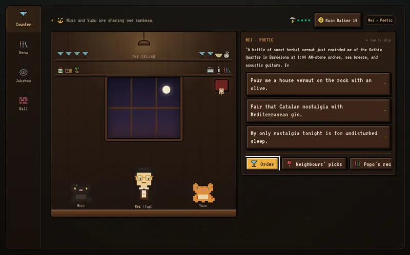
Coffee by day, drinks by night. A stool by the window.
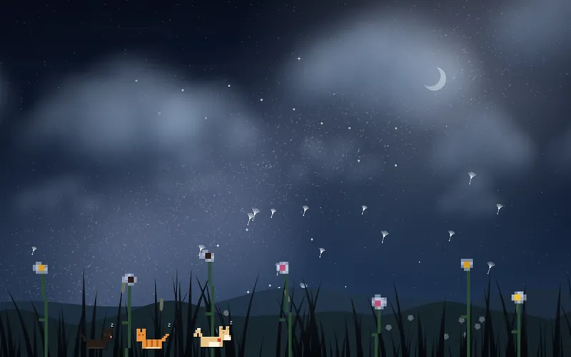
Warm grass, slow clouds.
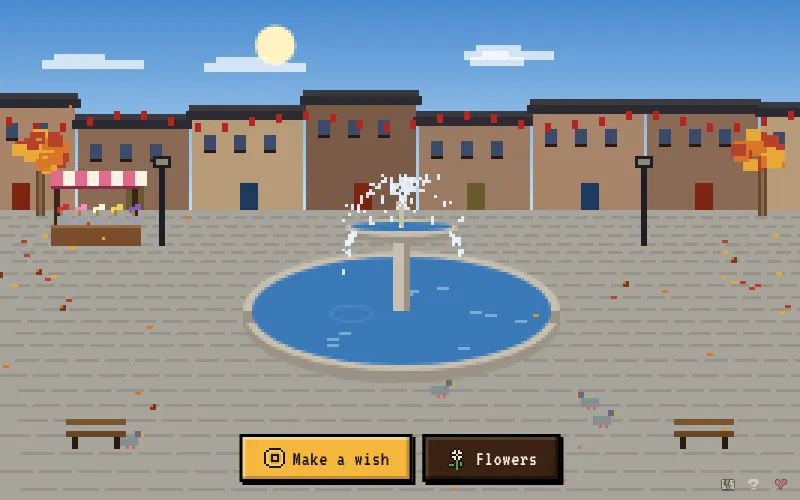
A fountain, a coin, a wish.
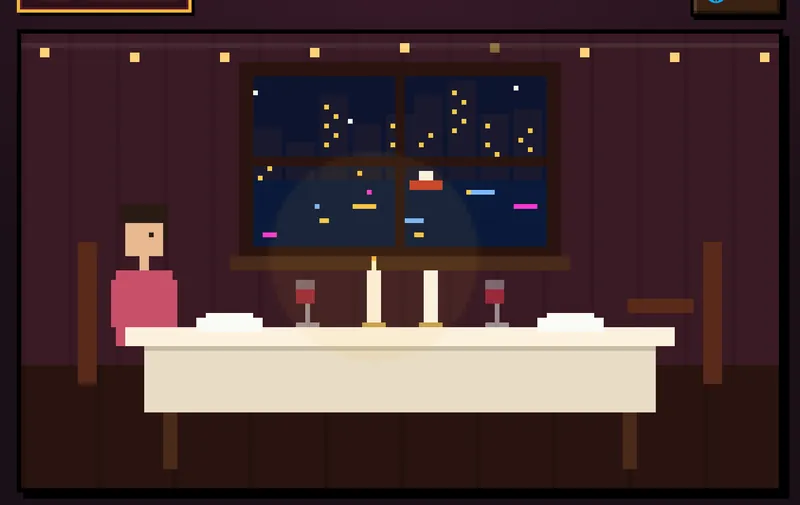
A table for two, however far apart.
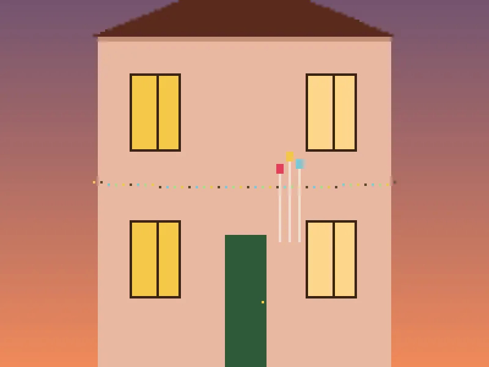
Plan a real get-together and see who's coming.
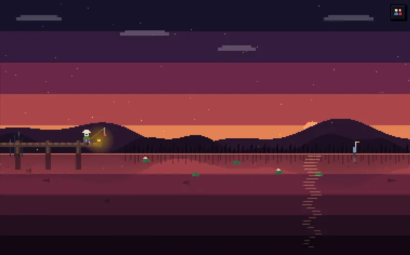
Cast from the dock. Let it go, or feed a cat.
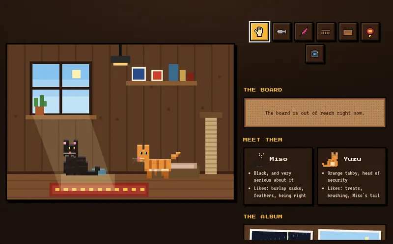
Two cats, one sunny windowsill.
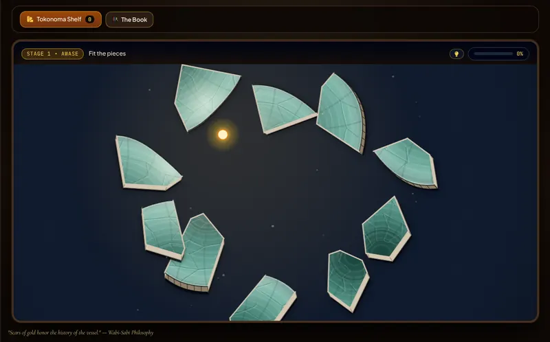
Mend what's broken with gold.
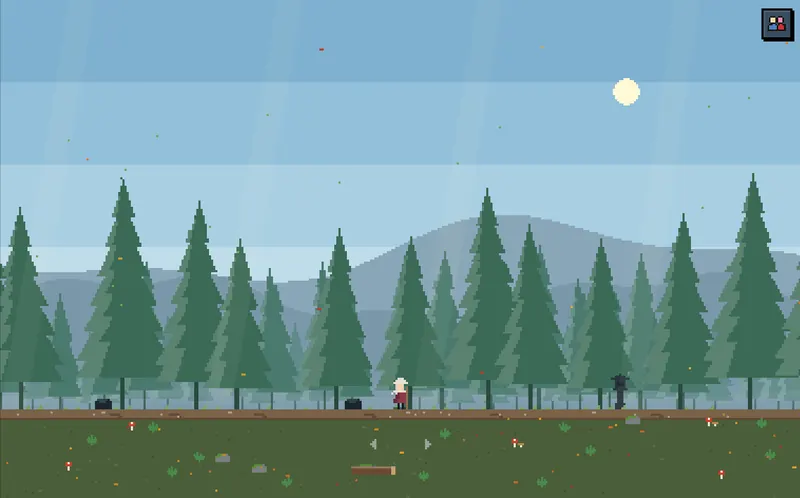
A slow walk under the pines.
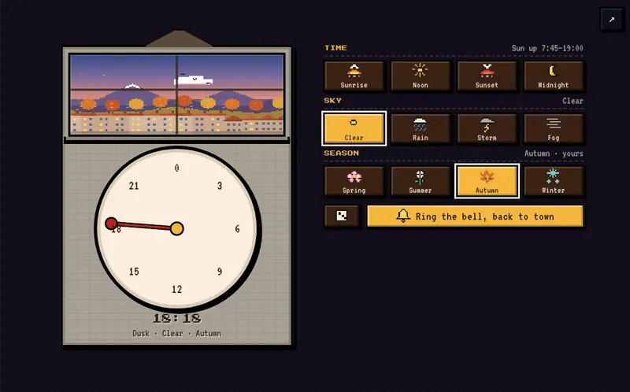
The town's hour and weather, under your hand.
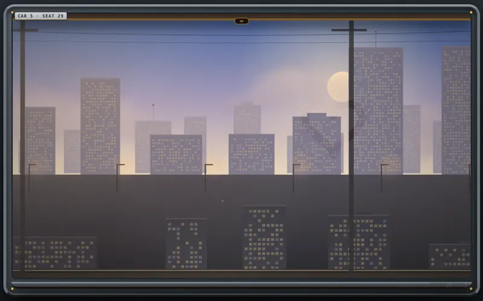
Watch the world go by from a night train.
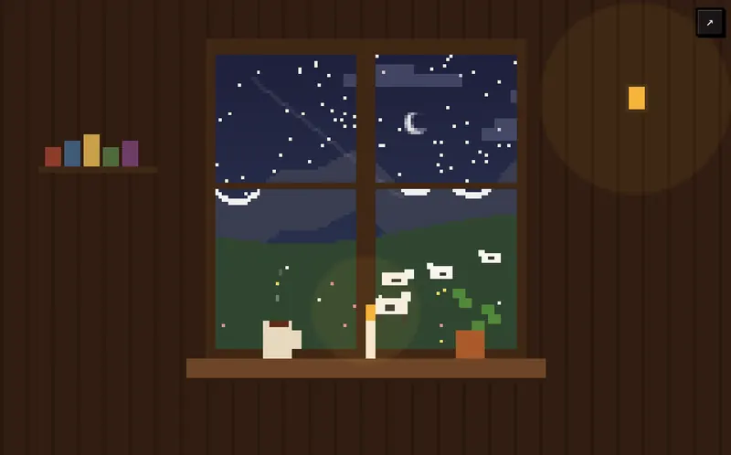
A window, a candle, the kettle on.
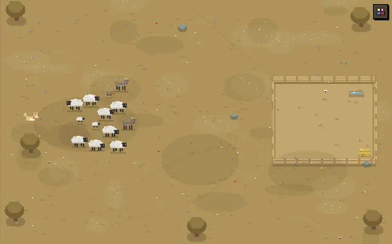
Walk the dog. The flock drifts home.
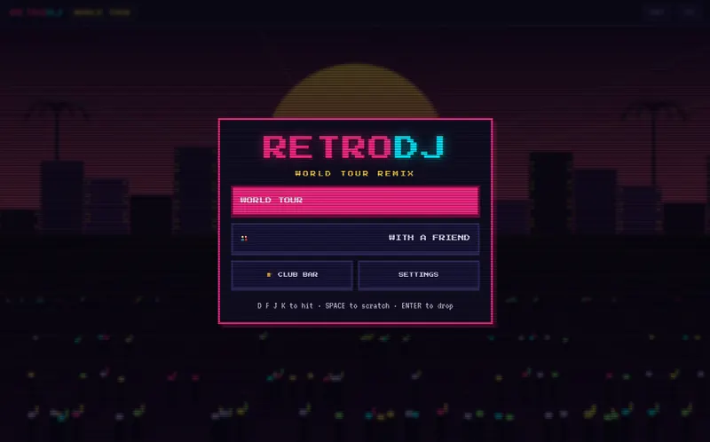
The club after the bar. Bring a friend for the other deck.
Where it comes from
02Twelve things in a blue biscuit tin.
Popo came from Hong Kong to Barcelona in 1968, at nineteen. The things she kept turn up around town, one at a time, and tell how Nearby began. The last one is a photo with an empty chair. It's for you.
Popo tells it herself, in CantoneseIt's autumn here too.
The seasons, the length of the day and the weather follow your own calendar. Lanterns float at Mid-Autumn, roses and books come out on Sant Jordi, and lights go up over the lanes in winter.
One question, two shifts
FREE//BUILDER × NearbyFREE//BUILDER
Better work starts between people: short, playful practice in listening, feedback and trust that ends in a real conversation.
See the practice →Can a screen send us back to each other?
Nearby
The same idea after work: a sealed postcard, a table for two, a grandmother who cooks for whoever walks in.
Walk in*slides a coaster* When you're done here, go and see someone you love.Wei, the bartender at Next Door